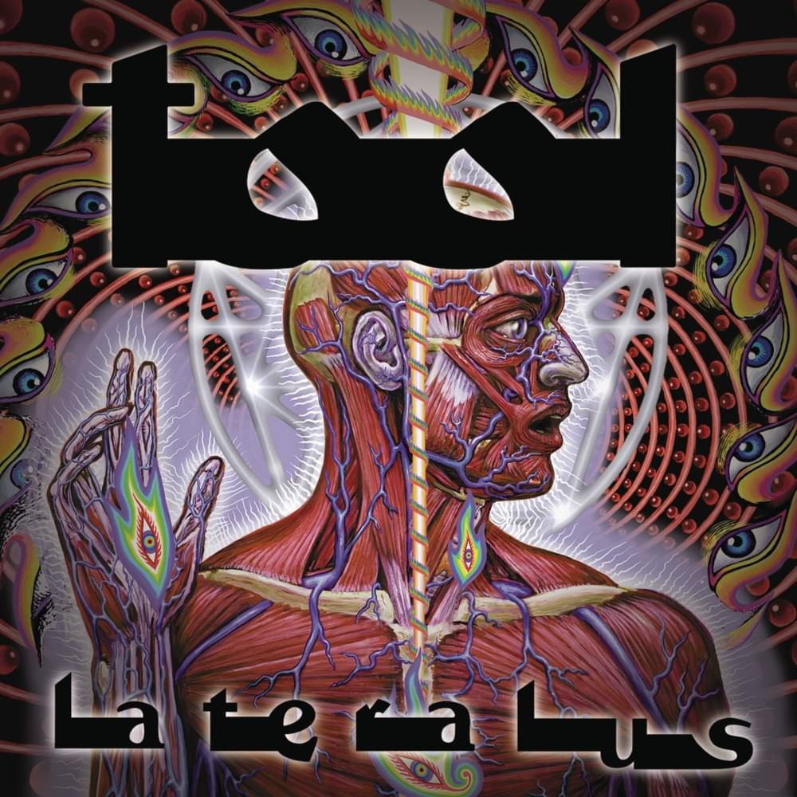
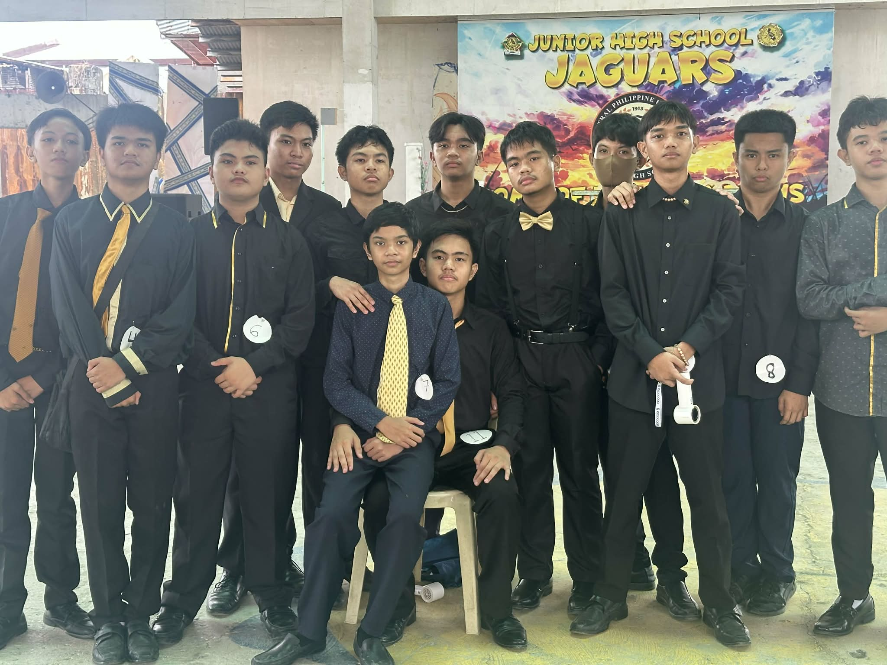

Tool is an American progressive rock and metal band formed in Los Angeles in 1990. The band members consist of:
Tool has won multiple Grammy Awards, performed worldwide tours, and produced chart-topping albums. Their music is deep, complex, and powerful — which is why they are my favorite band.
Listen to Tool My favorite band

This is a group photo with my friends.
Meaningful moments like these will stay with me even after our graduation.